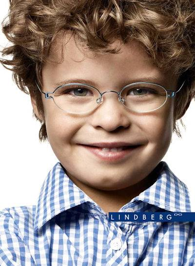
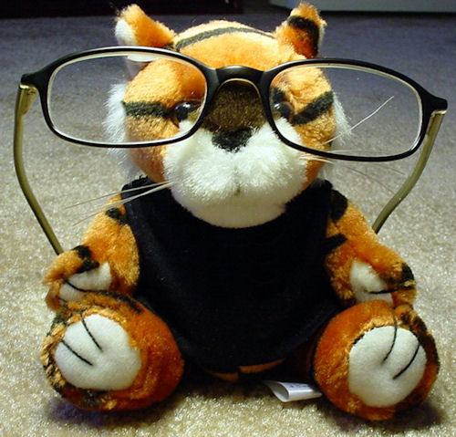

Kid’s Optical
Kid’s Optical
Choosing Eyeglass Frames for Children
According to statistics, approximately one out of five children need to wear glasses to see accurately. Unfortunately, it can be hard to get children to wear glasses for one of several reasons. Children can find glasses uncomfortable, “uncool” and unstylish, or too fragile for an active life.
Fortunately, there are strong, comfortable, stylish frames now made for children. These glasses not only improve vision, but they look great. These are some of the things you should look for when buying eyeglass frames for your child:
The right fit
A comfortable, correct fit is essential for children’s glasses. The frames should not be too big or too small, too close to the cheekbone and not higher than the eyebrow. The frames should fit the face well, and not be wider than the face itself. In general, the smaller the frames the easier it is for a child to forget about them, and not mind wearing them. However, they need to be large enough so that your child can see easily in all directions. An eye specialist needs to help fit the glasses, because the middle of the glasses needs to be adjusted to directly correspond to the middle of the pupils of the eye. Even small fitting errors can lead to much less effective vision correction. Parents should resist any urge to buy glasses that are a bit large for their children to grow into.
It’s also very important that the glasses fit properly on the bridge of the nose. Children have small noses and bridges, so the nose support of the glasses needs to fit very well, and be comfortable, with padding. If the glasses sit on pressure points, they will be very uncomfortable, and it’s unlikely your child will wear them. A new feature is gel-padding, that makes the nose bridge extra comfortable. With these features the glasses will be more comfortable to wear. Pay attention to the way the frames fit at the temples. They should fit comfortably, without pressure, and without being too loose. Spring hinges are very strong, and will ensure the frames have a long lifetime of wear. Eyeglasses fitted with sport temples are also an option. These temples are flexible, and are fitted for a child’s ear.
Materials Frame materials for children’s glasses need to have three properties - be extremely strong, break resistant and light. The ideal frame will be made out of a flexible material that can be bent about without breaking. For this reason eyeglass frames made of titanium are a good choice, as this material is light and strong. As for the lenses, polycarbonate lenses are more impact-resistant than other lenses, and are a good choice for children’s glasses.
Sports Glasses
Sports can be particularly challenging for children who need to wear glasses. Glasses tend to slip and slide with strong movements. Special sports glasses for children are available, that are made entirely out of plastic, with temples that don’t include hinges. These glasses include an elastic strap for the head that helps make sure the glasses stay in place.
Include your child
The most important part of choosing eyeglasses , is choosing them with your child. Include your child in the choice of glasses, among styles that are suitable. If your child likes the way the glasses look and feel, there is a much better chance that your child will actually wear them. When children wear their glasses they are more successful at everything that they do, both casual activities like sports and games, and learning activities at school.
Home » Eyeglasses » Kid’s Optical
Choosing Eyeglass Frames for Children
The right fit
Sports Glasses
Include your child



More from Eye Shop
Book your exam
Eye Shop - Located at 13130 Memorial Drive, Houston, TX 77079. Phone: 713-977-8464